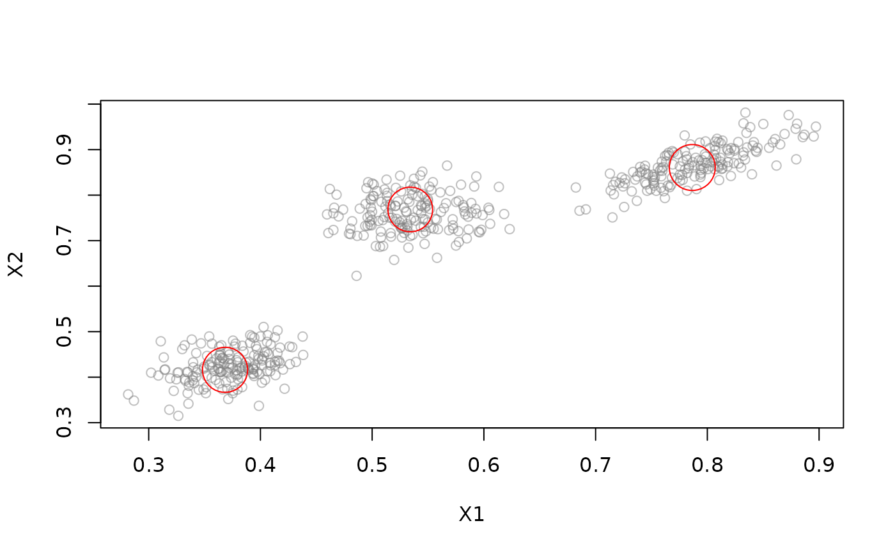

Micro Clusterer. BIRCH builds a balanced tree of Clustering Features (CFs) to summarize the stream.
Usage
DSC_BIRCH(
formula = NULL,
threshold,
branching,
maxLeaf,
maxMem = 0,
outlierThreshold = 0.25
)Arguments
- formula
NULLto use all features in the stream or a model formula of the form~ X1 + X2to specify the features used for clustering. Only.,+and-are currently supported in the formula.- threshold
threshold used to check whether a new data point can be absorbed or not.
- branching
branching factor (maximum amount of child nodes for a non-leaf node) of the CF-Tree.
- maxLeaf
maximum number of entries within a leaf node
- maxMem
memory limitation for the whole CFTree in bytes. Default is 0, indicating no memory restriction.
- outlierThreshold
threshold for identifying outliers when rebuilding the CF-Tree.
Details
A CF in the balanced tree is a tuple (n, LS, SS) which represents a cluster by storing the number of elements (n), their linear sum (LS) and their squared sum (SS). Each new observation descends the tree by following its closest CF until a leaf node is reached. It is either merged into its closest leaf-CF or inserted as a new one. All leaf-CFs form the micro-clusters. Rebuilding the tree is realized by inserting all leaf-CF nodes into a new tree structure with an increased threshold.
References
Zhang T, Ramakrishnan R and Livny M (1996), "BIRCH: An Efficient Data Clustering Method for Very Large Databases", In Proceedings of the 1996 ACM SIGMOD International Conference on Management of Data. Montreal, Quebec, Canada , pp. 103-114. ACM.
Zhang T, Ramakrishnan R and Livny M (1997), "BIRCH: A new data clustering algorithm and its applications", Data Mining and Knowledge Discovery. Vol. 1(2), pp. 141-182.
See also
Other DSC_Micro:
DSC_BICO(),
DSC_DBSTREAM(),
DSC_DStream(),
DSC_Micro(),
DSC_Sample(),
DSC_Window(),
DSC_evoStream()
Author
Dennis Assenmacher (Dennis.Assenmacher@uni-muenster.de), Matthias Carnein (Matthias.Carnein@uni-muenster.de)
Examples
stream <- DSD_Gaussians(k = 3, d = 2)
BIRCH <- DSC_BIRCH(threshold = .1, branching = 8, maxLeaf = 20)
update(BIRCH, stream, n = 500)
BIRCH
#> BIRCH - Balanced Iterative Reducing Clustering using Hierarchies
#> Class: DSC_BIRCH, DSC_Micro, DSC_R, DSC
#> Number of micro-clusters: 3
plot(BIRCH, stream)
